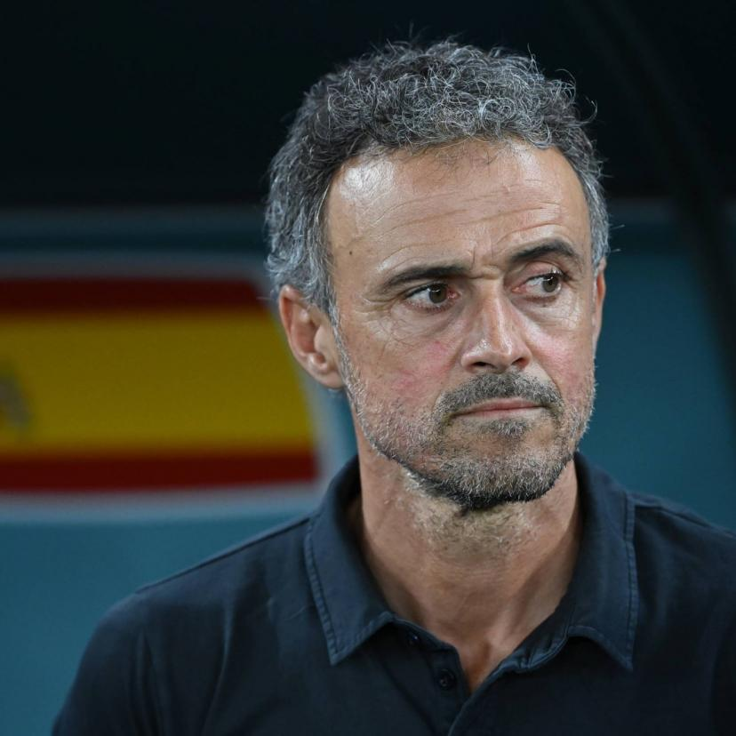

Né le 8 mai 1970 à Gijon en Espagne, Luis Enrique est un coach et ancien joueur de
football espagnol. Il rejoint le PSG pendant le mercato estival 2023. Il fait vite l'unanmité
chez les supporters, qui accueillent un début de saison réussi, sans surprise pour un
'Lucho' au CV bien rempli.
Pendant sa carrière d'entraîneur au sein du FC Barcelone
ainsi que de la sélection espagnole, Enrique accumule les victoires et les réussites entouré
de vestiaires de superstars. Il n'a donc pas été destabilisé par son arrivée à Paris
et son effectif de haute qualité, avec des joueurs à la renommée internationale tel que
Kylian Mbappé, ainsi qu'avec des joueurs hispanophones comme
Manuel Ugarte.
L'entraîneur n'était pas sans repère
en ce début de saison bien reçu par la critique.